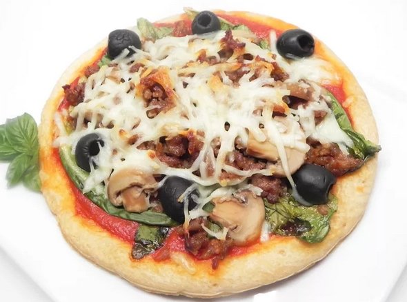

How to Make Escarole Pizza

A true Italian recipe that everyone will enjoy. You can use ready made pizza bread to make this quick or use your own recipe for a hand tossed pizza, either way, you're sure to enjoy! The escarole does not need to be cooked ahead of time, it cooks right on the pizza.
Ingredients
- 1 (12 inch) individual ready made pizza crusts
- 1 tablespoon olive oil
- 1 cup pizza sauce
- 1 clove garlic, minced
- 5 leaves escarole, rinsed and dried
- 5 leaves escarole, rinsed and dried
- 2 cups shredded mozzarella cheese
- salt and pepper to taste
Directions
- Preheat oven to 350 degrees F (175 degrees C).
- Lightly brush pizza crust with olive oil.
- Spread with a thin layer of pizza sauce, and sprinkle with minced garlic.
- Remove thick stems from escarole, and arrange leaves over pizza.
- Cover with shredded mozzarella cheese.
- Bake in preheated oven for 30 to 35 minutes, or until cheese is bubbly.
Back